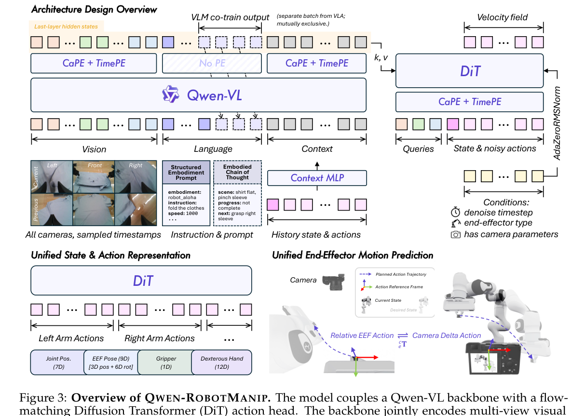

Paper Reading · Robotics World Models
Qwen-RobotManip：为什么 manipulation VLA 要先对齐再扩数据
Qwen-RobotManip 的主张很硬：机器人操作不能只学语言模型那套“堆异构数据就会 scaling”。如果不同机器人、不同坐标系、不同动作语义没有先对齐，更多数据只是更多冲突。 它把 contribution 压到一句话就是 alignment first, then scale。
0. 一句话结论
痛点：manipulation 数据天然异构：机器人形态、关节维度、EEF 坐标系、相机视角、控制频率和任务语言都不一致，直接混训会让模型学冲突的 action convention。 核心招：Qwen-RobotManip 在 Qwen-VL 后接 flow-matching DiT action expert，并做三层对齐：representation alignment、motion alignment、behavior alignment。 效果：使用开放机器人数据和人类视频构造约 38,100 小时语料，在 LIBERO-Plus、RoboTwin-C2R、RoboCasa365、EBench、RoboTwin-IF、RoboTwin-XE 等 OOD 设置上超过 \(\pi0.5\) 和 GR00T-N1.7；Table30-v1 generalist track 第一。 代价：需要复杂数据清洗、标定相机、统一 action schema、H2R 合成和多阶段训练；camera-frame EEF 依赖相机外参质量；代码当前尚未公开。
- 这篇到底在解决什么
- 它不是单纯提出一个 action head，而是在解决“跨机器人操作数据如何变成同一种可 scaling 的训练语言”。模型能力来自统一表示、坐标对齐、行为上下文和数据规模共同作用。
- 核心 insight
- 数据规模只有在 action semantics 对齐后才有价值。没有 UnifiedEEF，混合 post-training 甚至会从 35.0% 掉到 0.0%，这比“加数据没提升”更强：错误对齐的数据会破坏模型。
- 代码状态
- 报告列出
https://github.com/QwenLM/Qwen-RobotManip，但 2026-06-17 访问返回 404。本篇实现细节以报告为准。

1. 论文定位
Qwen-RobotManip 是 generalizable robotic manipulation VLA foundation model。 它不是 world model，不预测未来视频；它是 policy/action model：输入多视角图像、语言任务、机器人状态和可选 execution history，输出连续动作 chunk。
| 维度 | 主流 baseline | Qwen-RobotManip 差异 |
|---|---|---|
| 架构 | \(\pi0/\pi0.5\)、RDT、OpenVLA 类 VLM + action decoder | Qwen-VL + 10-block DiT flow-matching action expert，VLM token 通过 cross-attention 注入 |
| 数据 | 多源 robot datasets，常常只做表面拼接 | 开放 robot 数据 + ego human video + H2R 合成，约 38,100 小时 |
| 泛化评估 | LIBERO/RoboTwin IID 容易被 in-domain pattern matching 掩盖 | 重点看 LIBERO-Plus、RoboTwin-C2R、RoboTwin-IF、RoboTwin-XE 等 OOD |
2. 方法总览
multi-view images + task instruction + embodiment prompt + current proprioception
-> Qwen-VL backbone
vision tokens / language tokens / optional context tokens
-> last-layer hidden states as KV
-> DiT action expert
queries = state tokens + noisy action tokens
self-attention over state/action, cross-attention to VLM tokens
-> velocity field v_hat
-> Euler integration, 4 steps by default
-> action chunk a in 80D canonical action space关键符号：状态/动作都投到 80 维模板；每个 action chunk \(a\in\mathbb{R}^{T\times D}\)，其中 \(D=80\)。 DiT hidden dim \(D_{act}=768\)，10 个 transformer blocks，12 heads；VLM hidden state 维度报告写为 \(D_{vlm}=2560\)。
3. 关键创新点
3.1 Representation alignment：80D canonical state-action vector
旧方法为什么不行：不同机器人动作维度不同，直接 concat/zero-pad 只是把数字放到同一个矩阵里，不保证第 17 维在不同机器人中表示同一物理语义。
它怎么改：定义 80 维 canonical vector：两个 29 维 arm blocks + 22 维 reserved。每个 arm block 包含 7D joint、9D EEF pose、1D gripper、12D dexterous hand joints。缺失维度用 binary mask 排除 loss。
为什么有效：模型看到的是语义固定的 slot，而不是数据集私有 convention。单臂、双臂、灵巧手、移动底盘可以共享模板，梯度只作用到有效槽位。
代价/限制：80D 模板仍是人工 schema，未来遇到软体机器人、工具状态、力控、触觉等可能需要扩展 reserved dimensions。
3.2 Motion alignment：camera-frame delta EEF
旧方法为什么不行：同一个抓取动作在 base frame、EEF frame、world frame 下数值完全不同；跨 dataset 混训时，模型先要学坐标系翻译，而不是学“杯子往上提”这个技能。
它怎么改：把 EEF action 表示成参考相机坐标系下的 delta pose。直觉是：视觉上相似的动作，在相机坐标里也应数值接近。DiT cross-attention 中再用 CaPE 注入相机外参，给视觉 token 和 state/action token 提供相对几何关系。
为什么有效：视觉观察和 action 表示共享同一 frame，跨机器人形态时，技能更接近笛卡尔空间里的操作 primitive，而不是某个机械臂的关节轨迹。
代价/限制：需要相机内外参，标定错误会直接污染 action label。报告也说更紧凑的公式会更敏感，所以实现采用较稳的投影形式。
3.3 Behavior alignment：execution history as implicit embodiment identifier
旧方法为什么不行：只告诉模型“robot_aloha / fps / speed”是静态 metadata，不能表达这个 episode 里具体机器人怎么动、速度多快、控制滞后如何。
它怎么改：把历史 observation-state-action chunk 编码成 context tokens，拼到 VLM 输入里。每个历史 chunk 包含 \(o_h,s_h,a_h\)，state/action 由 MLP 投到 VLM hidden space，并加 temporal/slot embeddings。
为什么有效：history 不是为了记忆“做过什么任务”，而是为了估计当前 robot 的 execution style 和 kinematic signature。报告里 context 对 robot perturbation、camera perturbation、RoboTwin-C2R hard 都有帮助。
代价/限制：context 会让 action distribution 更复杂，需要更多 denoising steps。报告表 15 中 4 steps context 反而不稳，10 steps 才释放收益；episode 开头全是 zero context 时会犹豫。
3.4 Human-to-Robot synthesis
旧方法为什么不行：ego human video 多，但 action 不是 robot action，画面里也是人手。直接混入会造成 visual/action domain gap。
它怎么改：从 MANO hand keypoints 重定向出 gripper pose 和 width，用 SAM3 分割手臂、ProPainter 去手，MuJoCo IK 搜 base pose，再把机器人渲染合成回背景。约 1,933 小时 ego 数据扩成 15 种平台上的约 24,808 小时 H2R demonstrations。
4. 训练和推理流程
| 阶段 | 输入 | 训练目标/输出 | 要点 |
|---|---|---|---|
| 预训练 VLA stream | robot demos、ego human、H2R 合成、多视角图像、状态动作 | masked flow matching action loss | robot:VL 约 9:1，VLM 能力不被 action loss 洗掉 |
| 预训练 VLM stream | 空间 grounding、ECoT、ego video understanding、2D trajectory prediction | next-token prediction | 保持视觉语言语义和 embodied language grounding |
| SFT | 目标 benchmark 或真实机器人 demos | 只优化 flow matching loss | 使用 color jitter；通常不再用 VLM loss，后续消融显示混入 VL 有时更好 |
| 推理 | 当前图像、指令、状态、可选历史 context | action chunk | 默认 4 Euler steps；context 模式可能需要 10 steps 更稳 |
5. 公式和算法逐项解释
5.1 H2R hand-to-gripper retargeting
\(k_{vf}\) 是虚拟手指，\(p\) 是 gripper 中点，\(w\) 是 gripper width。实现上这把人手的拇指-食/中指夹取转成 parallel-jaw gripper 的位置和开合宽度。
5.2 Camera-frame EEF action
这表示把 end-effector 的相对旋转和平移投到参考相机坐标系。实现上依赖相机到 EEF 的外参，目标是让“图像里看起来类似的末端运动”在 action space 里也类似。
5.3 Context tokens
状态和动作历史被投成和 VLM hidden size 对齐的 token。\(e^{temp}\) 标记历史 chunk 位置，\(e^{slot}\) 标记 action token 槽位。默认采用 unified injection，让 VLM self-attention 同时看图像、语言和行为历史。
5.4 Masked flow matching loss
\(m\) 是多个 mask 的 AND：slot mask、step validity mask、human hand visibility mask。这样单臂机器人不会因为空的另一只手维度被训练，灵巧手也不会因为维度多而主导 batch 梯度。
6. 训练和推理细节对齐
- context mismatch：训练时随机抽 episode 中任意历史 window，避免复制最近 action；推理时用 rolling recent context。这是有意制造的正则化。
- denoising steps：普通模式 4 steps 低延迟；context 模式 4 steps 会 jitter，10 steps 更稳。这是速度和适应性的直接 tradeoff。
- 相机标定：camera-frame EEF 训练和推理都要求可靠内外参。没有标定时模型用 auxiliary flag 切到 robot-base relative mode，但跨具身收益会下降。
- VL co-training：预训练有 VL loss，SFT 默认没有；消融显示 post-training 混入 VL data 对 language perturbation 和 RoboTwin-IF 有收益。
- H2R 合成：视觉合成质量、IK 可达性和手部检测噪声会直接影响 label。报告有多阶段 filter，但完整过滤阈值未全部可复现。
7. 实验复盘
| 设置 | 结果 | 批判性解读 |
|---|---|---|
| IID | LIBERO 99.2，RoboTwin Easy/Hard 93.7/94.0 | 很强，但报告自己也强调 IID benchmark 不能说明预训练质量。 |
| LIBERO-Plus | Context 91.4，\(\pi0.5\) 84.4 | Robot/camera perturbation 的差距最能说明机器人数据预训练有效。 |
| RoboTwin-C2R | Context joint hard 69.4，\(\pi0.5\) 47.9 | OOD hard 更能显出 alignment 和 context；scratch 模型掉得很严重。 |
| RoboCasa365 | Total 35.9，Composite-Unseen 14.9 | 长程 kitchen 操作仍低，但相对 baseline 明显，说明组合泛化有改善但未解决。 |
| EBench | Overall SR 45.6 / score 60 | dexterous tabletop 上提升很大，可能来自灵巧手/双臂数据覆盖。 |
| RoboTwin-IF | 72.2 vs \(\pi0.5\) 49.6 | 这是语言 grounding 的关键证据，因为同场景里有多个合理动作，不能只靠视觉 shortcut。 |
| RoboTwin-XE | EEF avg 23.9 vs \(\pi0.5\) eef 7.5 | 绝对数不高，但零样本跨机器人本来很难；camera-frame EEF 的相对优势可信。 |
隐藏 confound：Qwen-RobotManip 的数据规模、Qwen-VL backbone、H2R 合成和 benchmark 后训练 recipe 都很强，单一模块的贡献需要看消融。好在报告对 UnifiedEEF、VL co-training、architecture、H2R、context 都给了相对完整消融，其中 UnifiedEEF 的证据最硬。
8. 可复现清单
- Qwen3.5-4B/Qwen-VL backbone，DiT action expert：10 blocks、hidden 768、12 heads。
- 80D state/action schema：两臂各 29D，22D reserved；必须实现 slot mask。
- flow timestep \(t\sim Beta(1,1.5)\)，推理 Euler integration 默认 4 steps。
- pretraining robot:VL 约 9:1，loss \(\mathcal{L}=\mathcal{L}_{FM}+0.1\mathcal{L}_{VLM}\)。
- action expert 每个 VLM forward 重复 \(K_{repeat}=8\) 个 diffusion noise/timestep 来摊薄成本。
- structured embodiment prompt 字段包括 embodiment、instruction、speed、fps、camera view direction；训练时部分字段 15% dropout。
- context 模式训练必须 stochastic context sampling，避免模型复制最近 action chunk。
- 【不确定】完整 38,100 小时数据的下载、授权、过滤阈值和 sampling registry 尚未公开。复现只能先用开放数据近似，并等待官方代码/配置。
9. 可能的改进方向
- 把 progress token 接进 context ->历史不仅包含动作，还包含任务进度估计；预期长程任务更稳；风险是 reward/progress label 噪声；实验接 ProcVLM 式 progress head。
- 触觉/力控 slot 扩展 ->利用 reserved dims 加 tactile/force；预期接触丰富任务提升；风险是多模态同步困难；实验看插拔、擦拭、柔性物体。
- EEF uncertainty head ->给 camera-frame delta 输出置信度；预期标定差/遮挡时更稳；风险是训练目标复杂；实验比较 calibration perturbation。
- FastWAM action execution object ->把 80D action、EEF frame、history context、progress state 封装成统一执行表征；预期 one-shot demo 更好迁移；风险是接口重；实验做跨任务/跨机器人 few-shot。
- 闭环 H2R 验证 ->用世界模型或仿真器筛 H2R 合成是否物理可执行；预期减少假动作；风险是 evaluator bias；实验比较 raw ego、H2R、H2R+sim-filter。
10. 速读备忘卡
- 核心口号不是 scale，而是 alignment unlocks scale。
- Representation alignment：80D canonical state/action vector + binary mask。
- Motion alignment：camera-frame delta EEF，让视觉相似动作数值也相似。
- Behavior alignment：execution history 作为隐式 embodiment identifier。
- Qwen-VL 负责理解，DiT action expert 负责连续动作 flow matching。
- H2R 把约 1,933 小时 ego video 扩成约 24,808 小时 robot demonstrations。
- RoboTwin-IF 用同场景多指令检查模型是否真听语言。
- RoboTwin-XE 检查零样本跨 robot，camera-frame EEF 是关键。
- 没有 UnifiedEEF，混合 post-training 会 representation collapse。
- context 有收益但要更多 denoising steps，低延迟部署要权衡。